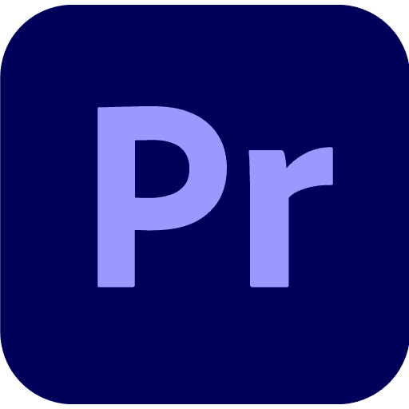
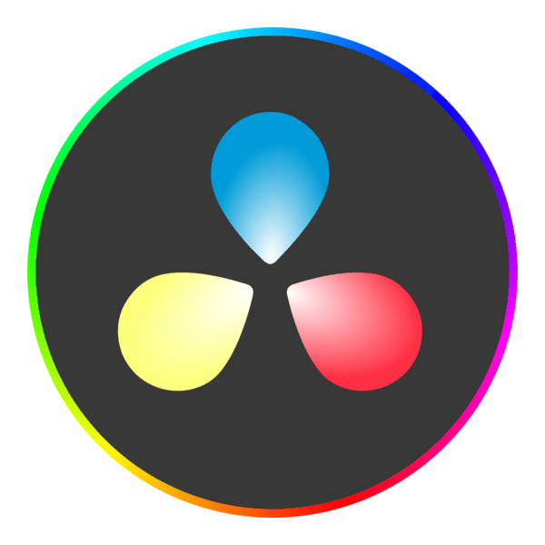
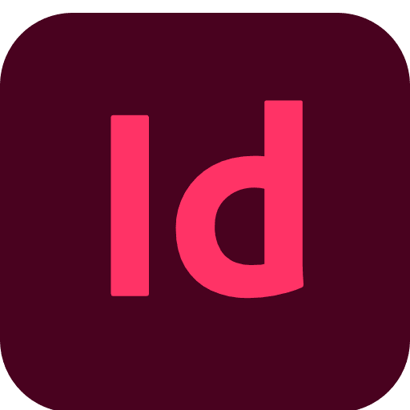
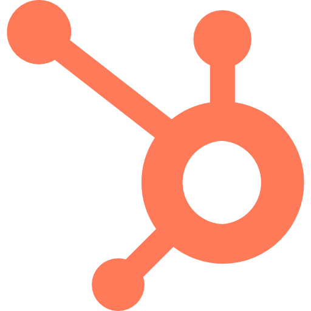
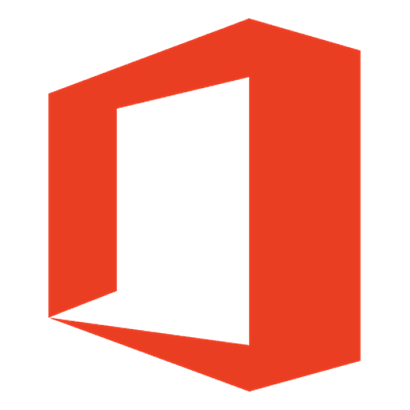

Lucas Fauchard, Com’ digitale, stratégie & IA.
J'accompagne les équipes sur l'usage de l'IA au quotidien : cadrer les outils, former les gens qui s'en servent, garder un œil sur ce qui sort et si l'esprit critique est préservé.
Sur l'IA, j'ai une position un peu inconfortable : je ne suis ni dans le camp des enthousiastes (« c'est la révolution, tout le monde doit s'y mettre ») ni dans celui des résistants (« c'est la fin de la pensée »). Les deux positions m'ennuient.
Ce qui m'intéresse, c'est comment on intègre un outil qui donne souvent raison trop vite, qui simplifie tout, qui fait gagner du temps mais pas forcément en qualité. Comment rester lucide et alerte tout en gardant son jugement quand c'est confortable de ne pas l'être. Car c'est ainsi que l'esprit critique se perd. J'en parle dans un livre blanc, L'Anesthésie Stratégique.
En parallèle, je termine mon Mastère 2 à l'ESP et je suis en alternance à la BPAURA au sein de la direction des risques dans un poste axé sur de la communication interne. Avant ça, j'étais chez Cavissima sur un poste plus marketing / e-commerce. Deux secteurs qui n'ont rien à voir, deux tailles d'entreprises différentes et deux types d'organisations qui diffèrent. Et c'est ce qui m'a permis de progresser.
Mais quelles sont les passions de Lucas ?
- Communication interne au sein du Contrôle Permanent et de la Direction des Risques.
- Création d'une mascotte institutionnelle, de vidéos pédagogiques, de capsules de formation sur le KYC.
- En somme, mes missions sont de rendre concrets et compréhensibles des sujets réglementaires qui sont complexes et redondants.
- Animation des réseaux sociaux, partenariats avec des influenceurs, SEO/SEA du site e-commerce.
- Production éditoriale : articles de blog, fiches produits, fiches producteurs, newsletters.
- Coordination des relations presse avec les agences externes.
- Création de contenus social média, supports print et digitaux, plan média.
- Pilotage du pôle partenariats via de la prospection, des négociations, fidélisation d'un portefeuille d'entreprises.
- Promotion des offres EF en salons étudiants, production de contenus social media & print (stories, vidéos, flyers), coordination du dispositif de sponsoring pour la Coupe du Monde de Rugby 2023.

Premiere Pro
DaVinci Resolve
InDesign Illustrator
Illustrator
 Canva
Canva

HubSpot Claude
Claude
 Gemini
Gemini
 ChatGPT
ChatGPT

Microsoft 365